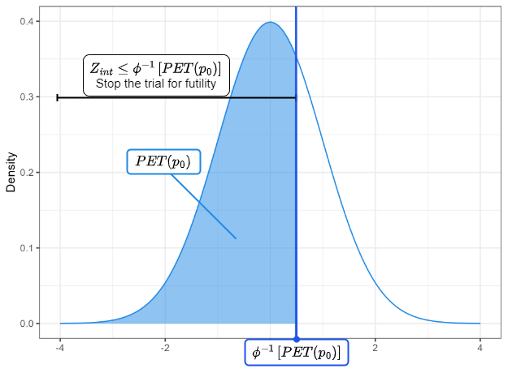
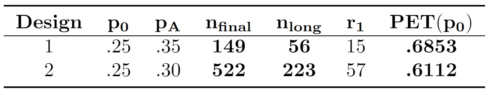
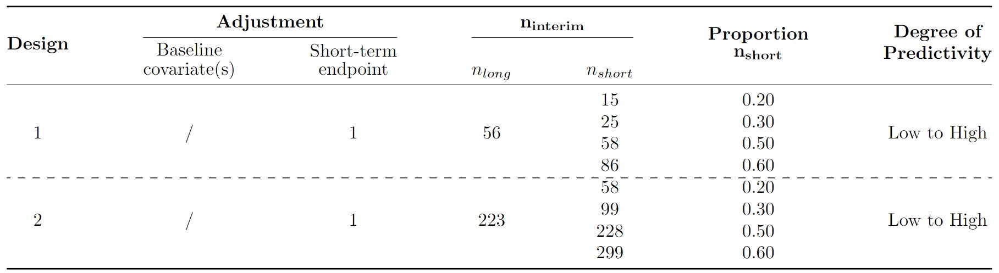
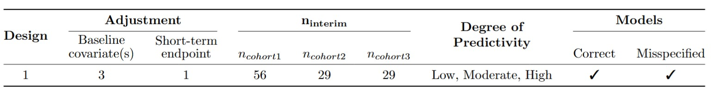
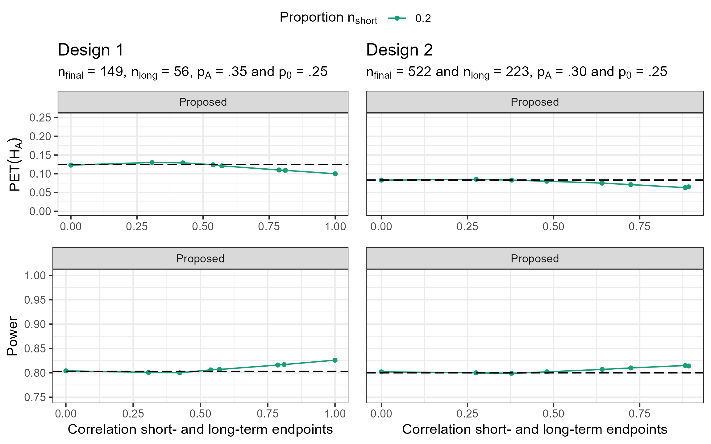
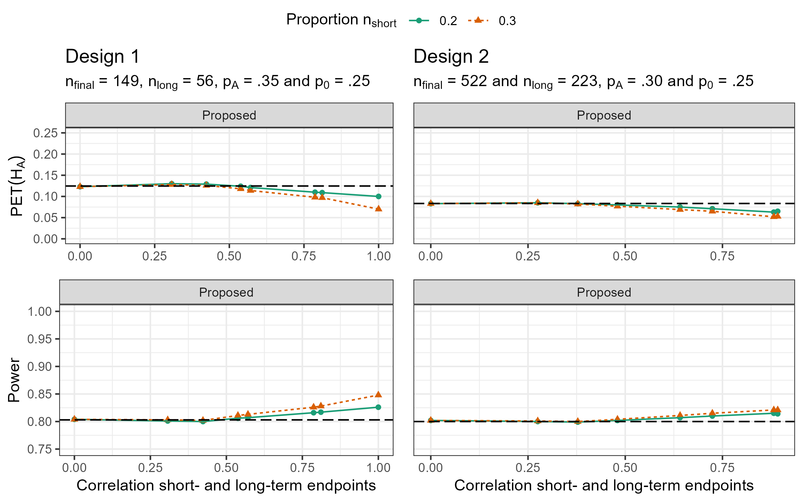
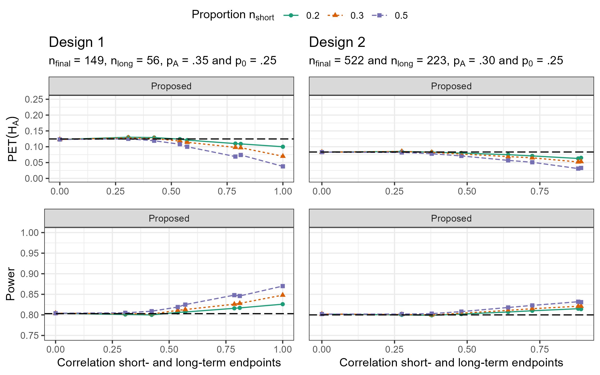
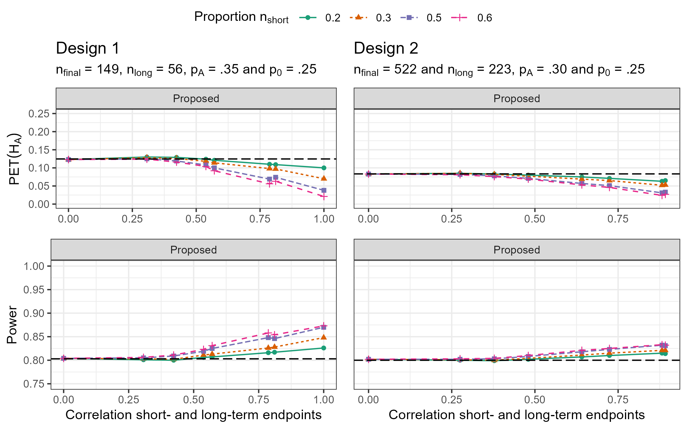
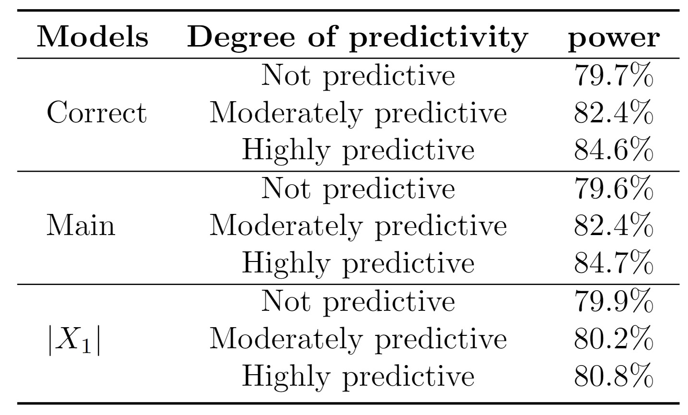

Improving interim decisions for single-arm trials by adjusting for baseline covariates and short-term
endpoints
Eline Anslot
Improving interim decisions for single-arm trials by adjusting for baseline covariates and short-term
endpoints
Eline Anslot
Joint work with Kelly Van Lancker
Table of content
Single-arm trials combined with multi-stage designs
Proposed method
Simulations
Discussion
Single-arm trials with multi-stage designs
Commonly used designs:
Group sequential designs
Simon's two-stage designs
Interim analysis of two-stage designs
Interim analysis:
based on the long-term endpoint ⇒ Unadjusted analysis
Simon's two-stage design:
Group sequential designs:
with \(Z\) compared to cut-off to stop a trial for futility or efficacy based on
e.g., Pocock (1977), O’Brien and Fleming (1979) or
Lan and DeMets (1983) \(\alpha-\) or \(\beta-\) error spending functions
Can we use more information?
Improve decision by short-term endpoint
More precise interim estimator
Recruitment with a pause:
Possible as in Kunz et al. (2017) and Zocholl et al. (2023)
Continuous recruitment:
⇒ Focus of the talk
Table of content
Single-arm trials combined with multi-stage designs
Proposed method
Simulations
Discussion
Proposed method
Step 1: Model fitting in cohort 1:
h(.): canonical link function
Step 2: Predicting in cohort 1 and 2:
Proposed method
Step 3: Model fitting in cohort 1 and 2:
Step 4: Predicting in cohort 1, 2 and 3:
Step 5: Averaging
Proposed method - Decision at interim
Decision at interim:
In Group Sequential Design: \(Z_{int}\) compared to cut-off to stop a trial for futility or efficacy based on
e.g., Pocock (1977), O’Brien and Fleming (1979) or
Lan and DeMets (1983) \(\alpha-\) or \(\beta-\) error spending functions
In Simon's Two-Stage:
with \(PET(p_0) = B(r_1; n_{long}, p_0)\)

Proposed method
Decision at interim:
Adjusting for multiple short-term endpoints and baseline covariates
Asymptotically unbiased even with misspecified models
Under random recruitment
Asymptotically efficient when models are correct
Table of content
Single-arm trials combined with multi-stage designs
Proposed method
Simulations
Discussion
Simulation settings
\(\alpha = 0.05\), \(power = 0.80\)
Design: two different optimal two-stage designs to generate e.g., \(n_{long}\) and \(r_1\)

Setting 1:

Simulation settings
\(\alpha = 0.05\), \(power = 0.80\)
Design: two different optimal two-stage designs to generate e.g., \(n_{long}\) and \(r_1\)
Setting 2:

Setting 1 - Under the null hypothesis
Setting 1 - Under the alternative hypothesis




Setting 2 - Model mispecification

Table of content
Single-arm trials combined with multi-stage designs
Proposed method
Simulations
Discussion
Discussion
Additional gain of the proposed method, depends on:
Proportion of additional participants in the pipeline
But ideally not everybody should be recruited at interim
Predictivity of baseline covariates and short-term endpoint
Model misspecification
Extension: data-adaptive methods to help build the models
(see e.g., Van Lancker et al., 2024)
Discussion
Calculate sample size as if no power gain occured
Type I error rate inflated in small sample
Estimator's variance leans on asymptotic theory
Decision at interim relies on approximation of standard
normal distribution
Alternatives: exact logistic regression,
Firth correction,
and Bayesian logistic regression